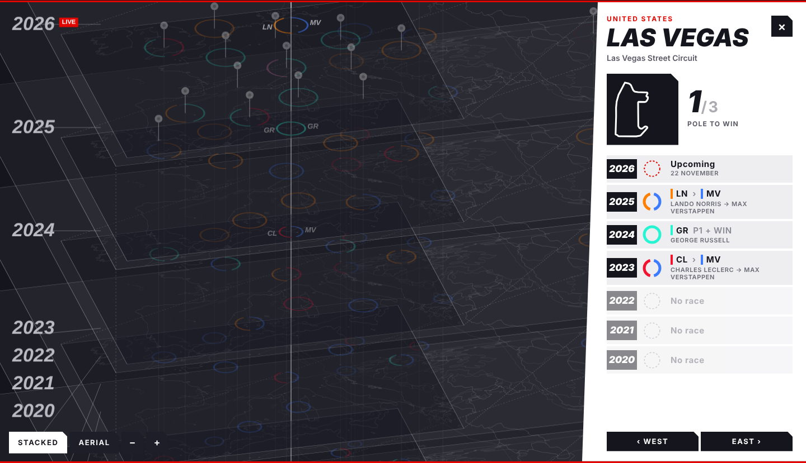
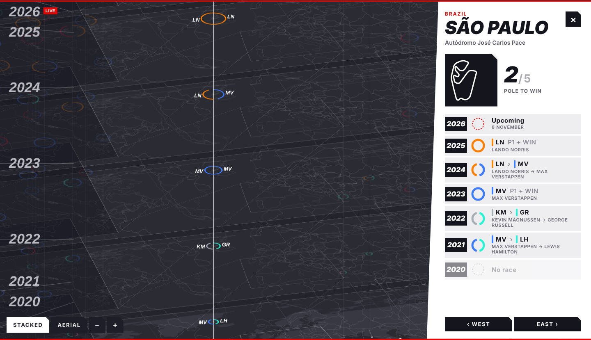

One Lap / Race Day
Does the fastest qualifier win the race? Seven F1 seasons, stacked as map layers.
Why
Everyone says pole position is half the race. I wanted to see it, not just count it.
What I did
Every Grand Prix from 2020 to 2026 is a ring on a world map: left half the pole-sitter's team, right half the winner's. Seasons stack as layers, then collapse into an aerial view.
What it taught me
Motion explains faster than a legend. Letting a pin grow on hover and fly you to the next city does the reading for you.
Self Initiated · 2026
[HTML, Canvas, JavaScript, F1DB, Natural Earth]
Play with it →




Unofficial fan project, not affiliated with Formula 1. Data: F1DB (CC BY 4.0). Geography: Natural Earth.